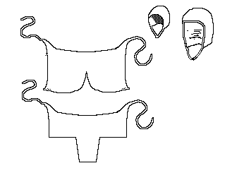

Coifs
Finds
- St. Birgitta's Coif
- Fernando, Infante de Castille's Coif

- Diagram based on costuming sketch
- Diagram based on costuming sketch
- Bonet - Green Felt
- Coif
Some Headwear of the Middle Ages - Caps & Coifs, by I. Marc Carlson.
Copyright 1996.